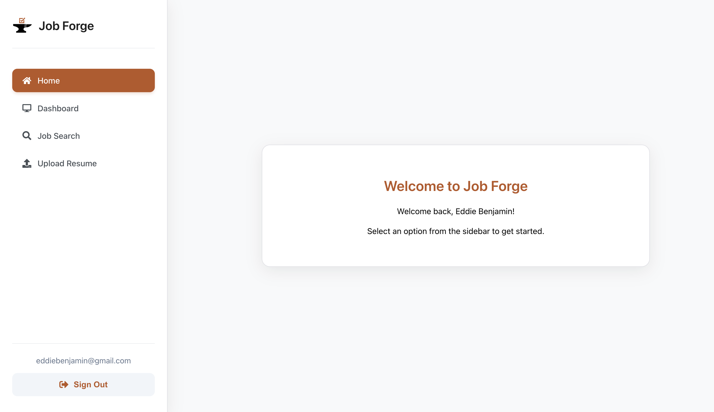
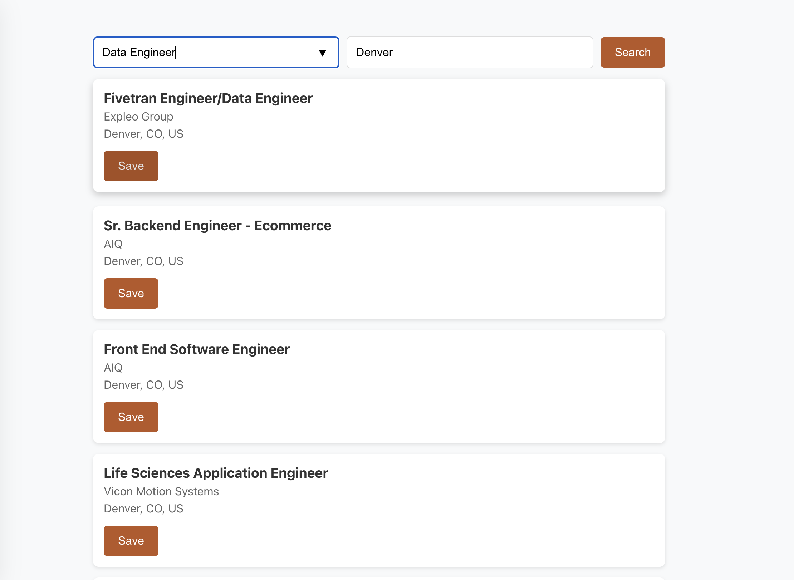
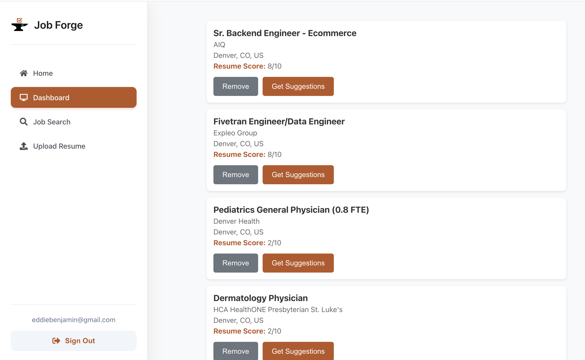
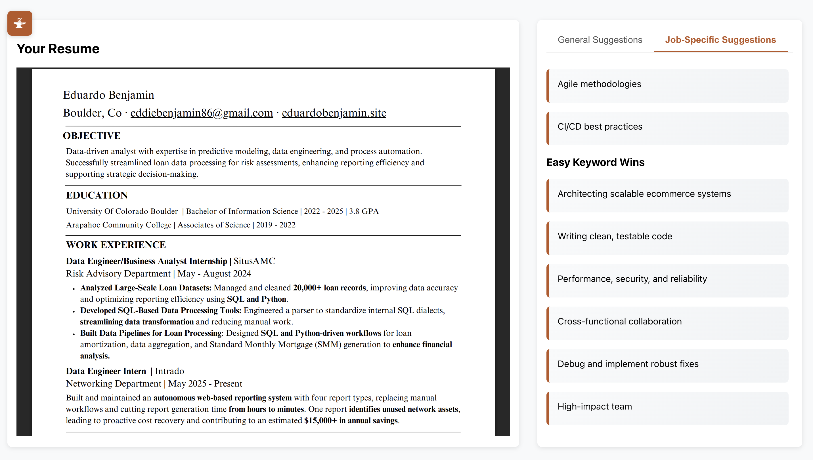

About the Project
Job Forge is a capstone project designed to empower job seekers by helping them overcome Applicant Tracking Systems (ATS) and land more interviews. Our app allows users to upload resumes, search jobs in real time, and receive AI-driven feedback to improve their chances of success.
Key Features
- Resume Upload & Parsing – Supports PDF, DOCX, and TXT formats
- Job Search Integration – Pulls real-time listings using the Indeed API
- AI Resume Matching – Compares uploaded resumes to job descriptions using NLP & machine learning
- Job Score – Delivers a similarity score to show how well a resume matches a specific job
- Tailored Suggestions – Provides both general and job-specific tips to improve match quality
- Job Tracking Dashboard – Organize saved jobs and track application progress
Demo Images




Tech Stack
- Frontend: React, Axios, Context API
- Backend: Flask, SQLite
- AI Integration: OpenAI API for resume scoring and suggestions
Our Mission
Our goal with Job Forge is to make resume tailoring faster, smarter, and more accessible—especially for applicants struggling with automated hiring systems.
Want early access?
We're running a limited release. DM us to get your personalized Job Score and resume feedback.
Team
- Eduardo Benjamin
- Jaden Castle
- Jackson Giezma
Contact
For inquiries or feedback, please email me.